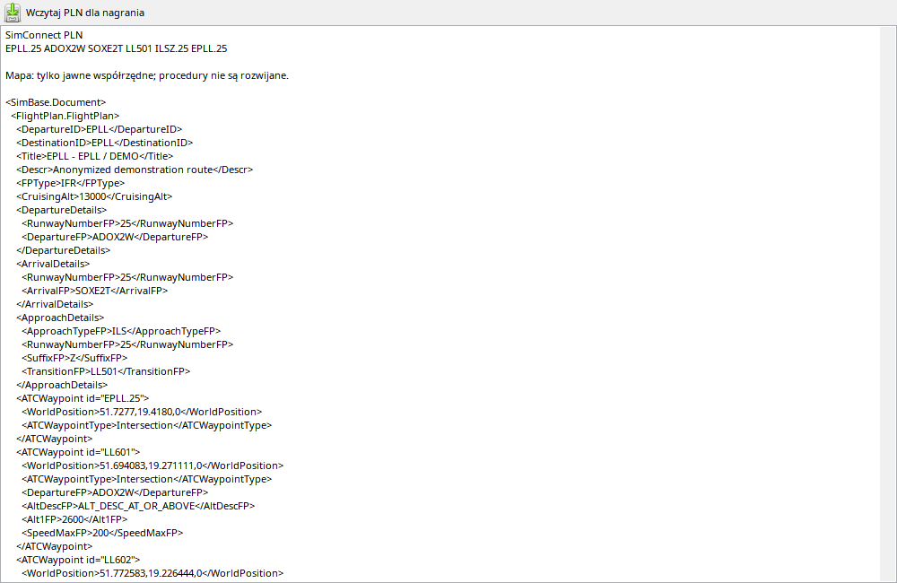

Odczyt planu i odzyskanie nawigacji s¹ dwoma etapami. Najpierw aplikacja zna opis EFB, lotniska i nazwy procedur, nastêpnie zapytania facility dostarczaj¹ geometriê, punkty i ograniczenia, które zostaj¹ zapisane z lotem. Sam ci¹g ADOX2W lub ILSZ.25 nie zawiera wszystkich wspó³rzêdnych. SimBrief mo¿e pomóc nazwaæ anonimowy punkt przy ró¿nicy AIRAC, lecz nie nale¿y zgadywaæ ograniczenia, którego nie ma w ¿adnym Ÿródle. Po zapisaniu rozwiniêtej trasy mapa odtwarza j¹ offline.
Zak³adka pokazuje plan zapisany z lotem. Nie jest edytorem FMS samolotu.
| Opcja / czynnoœæ | Dzia³anie i ograniczenia |
|---|---|
| Pobieranie | Po rozpoczêciu lotu czytany jest plan EFB/SimConnect, nastêpnie dane facility rozwi¹zuj¹ procedury i wspó³rzêdne; wynik jest zapisywany. |
| Lotniska | Odlot/cel mog¹ byæ znane przed uruchomieniem silników, jeœli s¹ w planie. UNKNOWN oznacza brak lub nierozwi¹zane dane tego nagrania. |
| Import PLN | Do³¹cz PLN akcj¹ importu planu. SprawdŸ odlot, cel i Ÿród³o przed u¿yciem nak³adki mapy. |
| Ograniczenia | Punkt mo¿e mieæ prêdkoœæ, wysokoœæ, pozycjê i rolê w procedurze. Brakuj¹ce dane pozostaj¹ brakuj¹ce; plan nie dowodzi zezwolenia ATC. |
| Offline | Zapisane snapshoty nie wymagaj¹ nowego zapytania do MSFS. Stare pliki z samym tekstem/punktami nie zawsze pozwalaj¹ rozwin¹æ procedury. |
